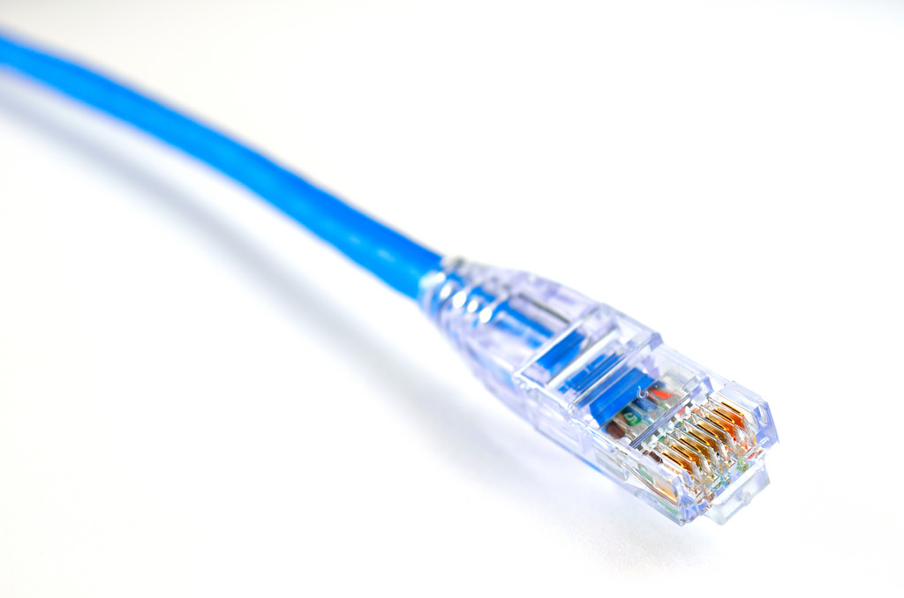
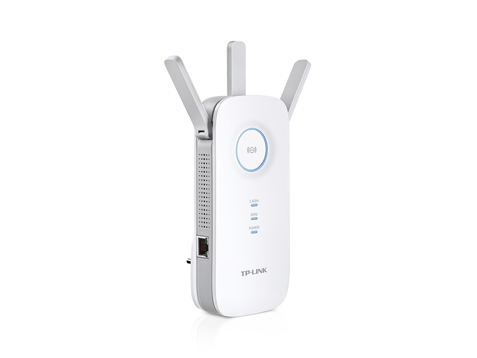
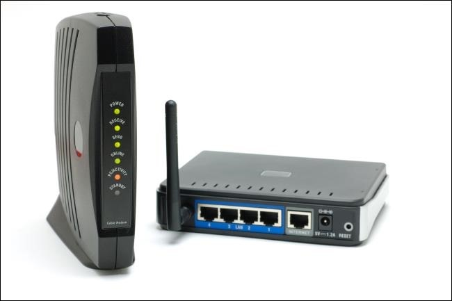

Router
A router is a small networking device designed to connect networks. It does this by receiving, analyzing and moving incoming packets to another
network.
Computer
You're going to have too have a computer with internet compatability in order to setup your home network.
Every computer built now a days has some sort of WIFI card so this doesn't really matter.
Ethernet Cable
Ethernet Cables are extremely important and are needed to connect your wireless network to your local computer.


WIFI Extender (Optional)
You may choose to use a WIFI extender to boost your WIFI across your home.
This is ideal if you are planning to use multiple laptops and other mobile devices that aren't close
to your access point.
Modem (Optional)
A modem maybe neccesary if you are connecting from a DSl or ADSl internet. Cable or Optic fiber internet
uses a Home Gateway which most newer routers have.
